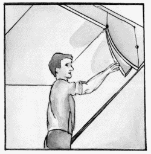

Акустические потолки.

Все мы живем в мире звуков: встав с постели после сна, включаем телевизор, магнитофон, радио, с утра начинает звонить телефон или пейджер. На кухне к этим звукам присоединяется шум от бытовой техники. К сожалению, почти все мы привыкли никак не реагировать на данные звуковые раздражители. В результате к 30 годам многие страдают от хронической усталости, гипертонии и неврозов. Если невозможно решить проблему громких звуков на улице, то в своей квартире или в офисе можно контролировать уровень шума.
Вы заметили, наверное, что, если повесить на стену ковер, а на пол постелить ковролин, в комнате станет намного тише? Уровень шума можно регулировать также и с помощью потолков, отделав их современными звукопоглощающими материалами. Чаще всего звукоизоляционные (акустические) потолки бывают подвесными или натяжными.
Многие производители подвесных панелей – такие, как «Armstrong», «Eсophon», «Akusto», «Owa», «Rockfon», «Luxalon», – выпускают акустические потолки. Плиты потолков производства фирм «Armstrong», «Rockfon», «Owa» сделаны из минерального волокна, а «Eсophon», «Akusto» – из пористой стекловаты, считающейся одним из лучших звукопоглощающих материалов.
Потолки фирмы «Luxalon» представляют собой алюминиевые перфорированные потолки, уменьшающие так называемый эффект эха и снижающие общий уровень шума в жилом помещении.
Акустические потолки обладают и другими свойствами:
– отвечают самым высоким требованиям пожаробезопасности;
– относятся к группе трудносгораемых покрытий: стекло и минеральное волокно, которые входят в материал панелей, не горят;
– потолочные плиты акустических потолков – прекрасный утеплитель: после монтажа такого потолка (рис. 18) в помещении становится не только тише, но и гораздо теплее.

Рис. 18. Монтаж акустического потолка.
Следует знать, что подбор акустических материалов должен осуществляться специалистом-акустиком.
Специалист также может предложить идеальный вариант только для вашей квартиры, поскольку при монтаже акустических потолков зачастую используется комбинация нескольких видов потолков. Для низких частот подходят одни потолки, для высоких – другие.
Подробнее об устройстве подвесного потолка читайте в главе «Реечные потолки».